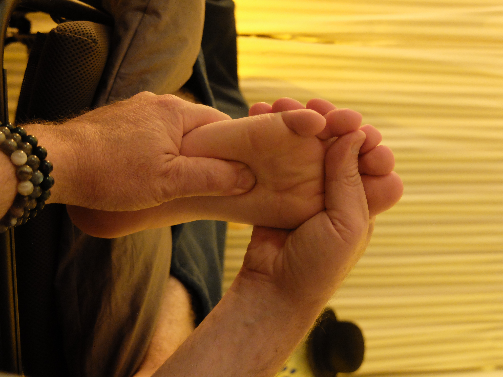

Pour prendre
rendez-vous
Contactez votre réflexologue :

Tarifs des consultations
- Adultes — 50 €
Séance entre 1h et 1h15 - Enfants (-12 ans) — 40 €
Séance entre 1h et 1h15 - Étudiants — 40 €
Séance entre 1h et 1h15 - À domicile — 65 €
Séance entre 1h et 1h15
Règlement par virement (wero), chèque ou espèces.
La carte bancaire n’est pas acceptée.
Déroulement d’une séance
Entretien personnalisé
Surtout développée lors de la première séance, cette phase dure environ 15 min.
Je vous installe confortablement dans un transat. Nous échangeons afin de connaître vos attentes. En fonction de nos échanges, j’adapte un protocole qui consiste à exercer des pressions sur les zones réflexes. Plusieurs protocoles sont possibles (addictions, poids, équilibre, lâcher-prise...).
Séance de réflexologie
Environ 1h
En règle générale, pour un changement en profondeur, plusieurs séances sont nécessaires en fonction de vos maux.
Après la séance
Les soins engendrent parfois un changement du transit, un regain d’énergie ou de décompensation, des courbatures, un changement de couleur des urines.
Ces effets peuvent durer entre 2 et 3 jours. Il est important de bien s’hydrater pour éliminer les toxines. Privilégiez le repos, mangez léger, évitez les activités physiques intenses et laissez votre corps faire ses changements.
Contre indications
Horaires de consultation
Du lundi au vendredi de 14h à 19h
Le samedi de 9h à 12h
Mentions légales
Éditeur du site
Le présent site est édité par :
Nom et prénom : Eric Bouvard
Profession : Réflexologue plantaire
Statut juridique : Entreprise individuelle
Adresse professionnelle : 15 rue des églantiers 37 300 Joué-les-Tours
Numéro de téléphone : 07 75 76 70 14
Adresse mail : ericbouvard@orange.fr
Numéro de SIRET : 802 662 486 00025
Code APE/NAF : 8690
Responsable de la publication
Directeur de la publication : Eric Bouvard
Crédits photos : Eric Bouvard
Hébergement
Le site est hébergé par :
Nom de l'hébergeur : La société Github
Adresse postale : 88 Colin P. Kelly Jr Street, San Francisco, CA 94107 United States
Adresse électronique : https://enterprise.github.com/contact
Propriété intellectuelle
L’ensemble des contenus présents sur ce site (textes, images, logos, graphismes) est protégé par le droit d’auteur.
Toute reproduction, représentation ou diffusion, totale ou partielle, sans autorisation préalable est interdite.
Responsabilité
Les informations diffusées sur ce site le sont à titre informatif.
L’éditeur s’efforce de fournir des informations exactes et à jour, mais ne saurait être tenu responsable d’erreurs, d’omissions ou de l’utilisation qui pourrait en être faite.
Données personnelles
Ce site ne collecte aucune donnée personnelle et n’utilise aucun cookie. Aucune information n’est enregistrée, stockée ou transmise à des tiers.
Loi applicable
Les présentes mentions légales sont soumises au droit français.
Conditions Générales de Prestation (CGP)
1. Présentation de l'activité
Les présentes conditions générales de prestation s’appliquent à l’ensemble des séances de réflexologie plantaire.
La réflexologie plantaire est une pratique de bien-être et d’accompagnement à la détente. Elle s’inscrit dans une démarche de prévention et de relaxation.
2. Nature des prestations
Les séances proposées ont pour objectif :
La réflexologie plantaire ne constitue en aucun cas un acte médical ou paramédical. Elle ne permet pas d’établir un diagnostic, de modifier ou d’interrompre un traitement médical.
3. Contre-indications
Certaines situations peuvent nécessiter un avis médical préalable (grossesse à risque, troubles circulatoires graves, pathologies lourdes, fièvre, infections, traumatismes récents, etc.).
Le client s’engage à informer le praticien de tout problème de santé connu avant la séance.
4. Responsabilité
Les séances sont réalisées dans le respect de la personne, de son intégrité physique et morale.
Le praticien ne pourra être tenu responsable des conséquences résultant d’informations erronées ou incomplètes fournies par le client, ni d’une utilisation inappropriée des conseils donnés.
5. Prise de rendez-vous et annulation
Les rendez-vous sont pris d’un commun accord.
En cas d’empêchement, le client est invité à prévenir le praticien dès que possible. Toute séance non annulée à l’avance pourra être due, sauf cas de force majeure.
6. Tarifs et paiement
Les tarifs sont indiqués en euros et communiqués avant la séance. Le règlement s’effectue à l’issue de la prestation par les moyens acceptés par le praticien. Les prestations de réflexologie ne sont pas prises en charge par l’Assurance Maladie, mais peuvent faire l’objet d’un remboursement par certaines mutuelles.
7. Loi applicable
Les présentes conditions générales de prestation sont soumises au droit français.